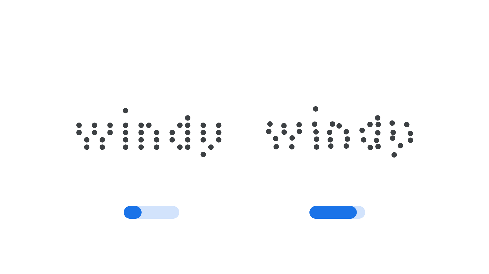

Jitter axis (JITT)
By Google Fonts Knowledge contributors · Google Fonts Knowledge.
Original article · Source on GitHub · CC BY-SA 4.0. Text, illustrations and existing credits reproduced from the licensed Knowledge repository. Open Shelf adapted the layout and links; these adaptations are also CC BY-SA 4.0. No endorsement implied.
“Jitter” (JITT in CSS) is an axis found in some variable fonts that applies irregular, randomized displacement to glyphs, emulating the mechanical imperfections of vintage printing equipment.
The Google Fonts CSS v2 API defines the axis as:
| Default: | Min: | Max: | Step: |
|---|---|---|---|
| 0 | 0 | 100 | 1 |

Typeface: Tiny5
At 0, characters sit precisely on the baseline and align cleanly with one another. As the value increases, individual glyphs shift slightly and unevenly out of position, giving the text the displaced, uneven look of type printed by worn mechanical equipment such as dot-matrix or thermal printers.
Because the displacement is randomized rather than uniform, each character is nudged by a different amount, which helps avoid the repetitive, obviously-patterned look that a simple uniform offset would produce.